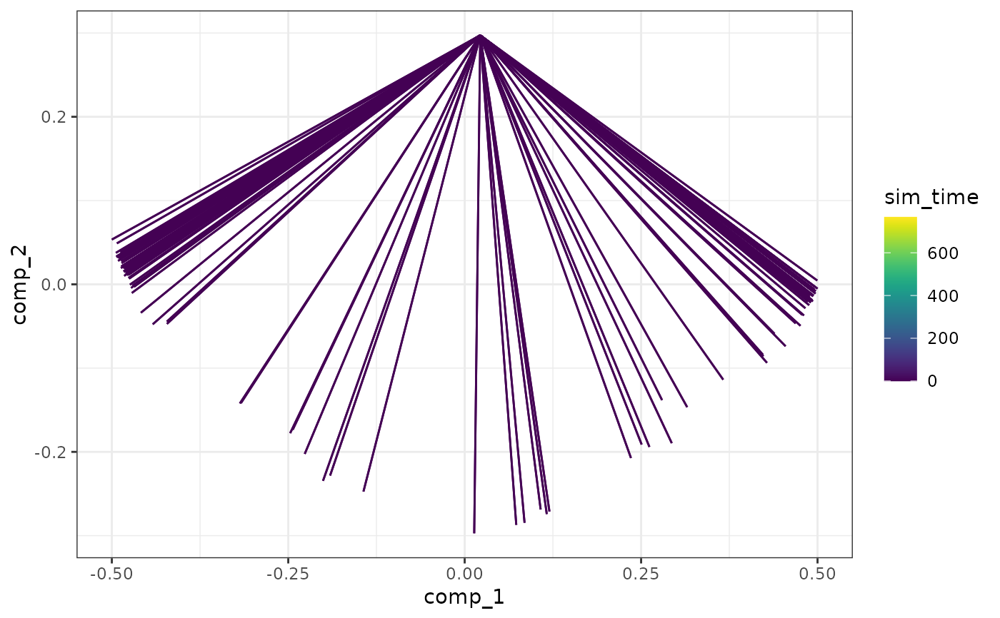

Assume the given models have the exact same feature ids and ran up until the generate_cells() step.
In addition, the user is expected to run generate_experiment() on the combined models.
combine_models(models, duplicate_gold_standard = TRUE)Arguments
- models
A named list of models. The names of the list will be used to prefix the different cellular states in the combined model.
- duplicate_gold_standard
Whether or not the gold standards of the models are different and should be duplicated and prefixed.
Value
A combined dyngen model.
Details
See the vignette on simulating batch effects on how to use this function.
Examples
# \donttest{
data("example_model")
model_ab <- combine_models(list("left" = example_model, "right" = example_model))
# show a dimensionality reduction
plot_simulations(model_ab)

plot_gold_mappings(model_ab, do_facet = FALSE)
 # }
# }